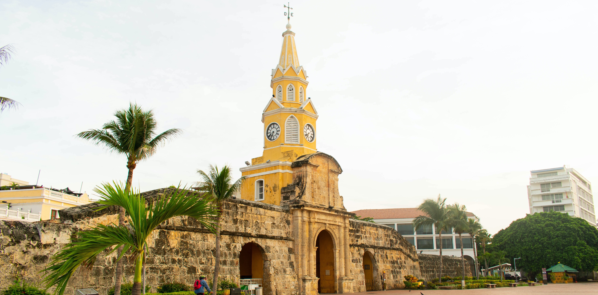

Cartagena es una de las ciudades con más patrimonio en Colombia, gracias a que su arquitectura funcionó como estrategía defensiva para evitar que piratas ingleses y de otras partes del mundo saquearan la ciudad. Esto hizo que ganara el nombre de "ciudad amurallada".
Cartagena de Indias es patrimonio histórico de la humanidad, titulo otorgado por la UNESCO en 1984, y actualmente es uno de los sitios turisticos mejores conservados de América. Casi todas sus construcciones tienen más de 300 años de antigüedad, que, al sol de hoy, representan el patrimonio culturar de toda una nación.